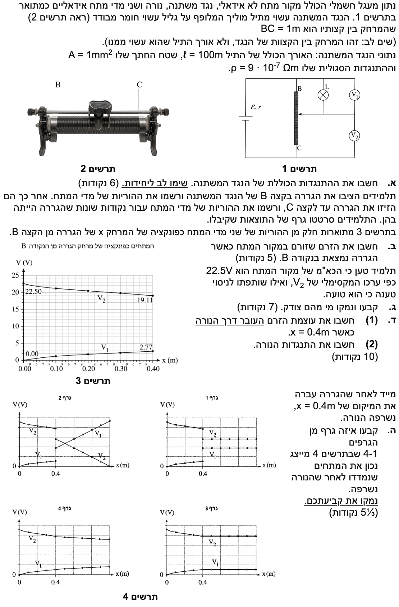
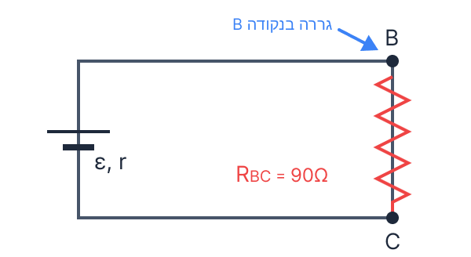
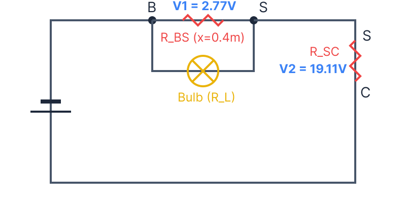

פתרון מלא ומודרך, צעד אחר צעד לניתוח מעגלי זרם ופוטנציומטר
שלום תלמידים יקרים! בשאלה זו אנו מתמודדים עם מעגל חשמלי הכולל מקור מתח לא אידאלי ונגד משתנה. ננתח את המעגל צעד אחר צעד, נבין את משמעות הגרפים, ונראה כיצד שינוי מיקום הגררה משפיע על חלוקת המתחים והזרמים במעגל. בואו נתחיל!

שימו לב להבחנה מתודולוגית חשובה: כאשר נגד משתנה מחובר למעגל בשני הדקיו (כמו הקצוות B ו-C בשאלה שלנו) וגם דרך הגררה, הוא משמש כמחלק מתח ונקרא פוטנציומטר. לעומת זאת, אם הוא מחובר רק דרך הדק אחד והגררה (כאשר ההדק השני נותר מנותק), הוא מתפקד כנגד טורי משתנה בלבד ונקרא ראוסטט. מילים אלו יכולות להופיע בבגרות, וחשוב שנכיר את ההבדל ביניהן!
נתונים לנו המאפיינים הפיזיים של התיל המרכיב את הנגד המשתנה BC:
שלב 0 - המרת יחידות (MKS): עלינו להמיר את שטח החתך למטרים רבועים. אנו יודעים כי מטר אחד שווה ל- \( 1000\text{ mm} \) ולכן \( 1\text{ mm} = 10^{-3}\text{ m} \). מכאן, שטח החתך ביחידות תקניות יהיה:
אנו מחפשים את ההתנגדות החשמלית הכוללת של הנגד המשתנה בין הנקודות B ו-C, שנסמנה ב- \( R_{BC} \).
נשתמש בנוסחה לחישוב התנגדות של תיל מתוך דף הנוסחאות:
\( R = \rho \frac{\ell}{A} \)נציב את הנתונים המומרים אל תוך הנוסחה:
נחשב את הביטוי:
ההתנגדות הכוללת של הנגד המשתנה היא: \( R_{BC} = 90\text{ }\Omega \)
הגררה מוצבת בנקודה B. נתבונן בתרשים 3: המרחק מנקודה B הוא \( x=0 \).
מהגרף נוכל לקרוא את ערכי המתחים בנקודה זו: עבור \( x=0 \), מד המתח \( V_1 \) מראה \( 0\text{ V} \) ומד המתח \( V_2 \) מראה \( 22.5\text{ V} \).
ההתנגדות הכוללת של התיל שחישבנו: \( R_{BC} = 90\text{ }\Omega \).
אנו מחפשים את הזרם הכולל הזורם במעגל (ויוצא ממקור המתח) כאשר הגררה נמצאת בנקודה B.
העיקרון הפיזיקלי החשוב כאן הוא הבנת תפקיד הגררה: כאשר הגררה בנקודה B, הנורה "מקוצרת" משום שההתנגדות של הקטע העליון (מנקודה B לגררה) שווה לאפס. לכן, אין זרם דרך הנורה והזרם כולו זורם דרך הנגד המשתנה BC.
נשתמש בחוק אוהם לנגד (כפי שמופיע בדף הנוסחאות):
\( V = RI \)כאשר הגררה בנקודה B, מד המתח \( V_2 \) מודד את המתח על פני כל הנגד המשתנה BC. ההתנגדות של כל המעגל החיצוני שווה להתנגדות הנגד המשתנה בלבד, כלומר \( R_{BC} = 90\text{ }\Omega \). לכן, המתח על הנגד המשתנה הוא \( V_2 = 22.5\text{ V} \).
נבודד את הזרם מתוך חוק אוהם ונציב את הנתונים:

הזרם במקור המתח כאשר הגררה בנקודה B הוא: \( I = 0.25\text{ A} \)
תלמיד טוען כי הכא"מ (הכוח האלקטרו-מניע, \( \varepsilon \)) הוא \( 22.5\text{ V} \). שותפתו טוענת שהוא טועה. אנו יודעים מהפתיח לשאלה כי מקור המתח הוא לא אידאלי, כלומר יש לו התנגדות פנימית המקיימת \( r > 0 \). חישבנו בסעיף הקודם שכאשר מודדים \( 22.5\text{ V} \), זורם במעגל זרם של \( I = 0.25\text{ A} \).
אנו נדרשים לקבוע מי מהתלמידים צודק ולנמק את קביעתנו באופן פיזיקלי.
הקשר בין מתח ההדקים (\( V_{ab} \)), הכא"מ (\( \varepsilon \)), הזרם (\( I \)) וההתנגדות הפנימית (\( r \)) נתון בדף הנוסחאות:
\( V_{ab} = \varepsilon - rI \)
כאשר הגררה בנקודה B, מד המתח \( V_2 \) מחובר במקביל לכל המעגל החיצוני (הנגד המשתנה BC), ולכן הוא מודד למעשה את מתח ההדקים של מקור המתח: \( V_{ab} = 22.5\text{ V} \).
נציב את הנתונים בנוסחת מתח ההדקים:
נבודד את הכא"מ:
היות וידוע לנו שזורם זרם במעגל (\( I = 0.25\text{ A} \)) ושהמקור אינו אידאלי (\( r > 0 \)), נובע בהכרח שהמכפלה \( I \cdot r \) היא גודל חיובי. לכן:
השותפה צודקת. הכא"מ בהכרח גדול מ- \( 22.5\text{ V} \) בגלל מפל המתח על ההתנגדות הפנימית של הסוללה.
(1) את עוצמת הזרם העובר דרך הנורה, שנסמנו \( I_L \).
(2) את ההתנגדות של הנורה, שנסמנה \( R_L \).
התנגדות תלויה באורך. ההתנגדות של כל קטע בתיל יחסית לאורכו: \( R_x = \frac{x}{\ell} R_{BC} \).
\( V = RI \) \( \Sigma I = 0 \) (חוק הצמתים של קירכהוף)
ראשית, נחשב את ההתנגדויות של שני חלקי הפוטנציומטר, הקטע העליון BS והקטע התחתון SC:
הזרם הכולל במעגל יוצא ממקור המתח, מתפצל בין הנורה לקטע BS, וחוזר להתאחד כדי לעבור כולו דרך הקטע SC. לכן, הזרם דרך הקטע SC הוא הזרם הכולל במעגל (\( I_{total} \)).
נחשב את הזרם הכולל בעזרת המתח עליו (\( V_2 \)):
כעת, נחשב את הזרם העובר רק דרך הקטע העליון BS בעזרת המתח עליו (\( V_1 \)):
לפי חוק הצמתים של קירכהוף, הזרם הכולל שווה לסכום הזרמים בענפים המקבילים. לכן הזרם בנורה הוא:
הנורה מחוברת במקביל לקטע BS, ולכן המתח עליה הוא זהה, כלומר \( V_1 = 2.77\text{ V} \). נשתמש בחוק אוהם עבור הנורה:
(1) הזרם דרך הנורה הוא: \( I_L = 0.277\text{ A} \)
(2) התנגדות הנורה היא: \( R_L = 10\text{ }\Omega \)
מייד לאחר שהגררה עברה את מיקום \( x=0.4\text{ m} \), הנורה נשרפה. יש לפנינו ארבעה גרפים אפשריים (תרשים 4) המתארים את התנהגות המתחים לאחר שריפת הנורה כפונקציה של מיקום הגררה \( x \).
לקבוע איזה מבין 4 הגרפים מייצג נכונה את השתנות המתחים \( V_1 \) ו- \( V_2 \) לאחר שריפת הנורה, ולנמק את הקביעה.
נורה שרופה מהווה נתק (התנגדות אינסופית), ולכן לא זורם דרכה זרם. המעגל הופך למעגל טורי פשוט שבו ההתנגדות החיצונית היא סכום התנגדויות חלקי התיל: \( R_{eq} = R_{BS} + R_{SC} \).
מאחר ש- \( R_{BS} \) ו- \( R_{SC} \) משלימים זה את זה לחוט השלם, סכומם תמיד קבוע ושווה ל- \( R_{BC} = 90\text{ }\Omega \).
לפני שניגש למספרים, בואו נבין את התהליך הפיזיקלי היפה שמתרחש כאן. ברגע שהנורה נשרפת, נוצר נתק בענף שלה. החלק במעגל שהיה מקבילי הופך להיות טורי פשוט (רק התיל עצמו נותר), ולכן ההתנגדות השקולה של המעגל כולו גדלה.
כאשר ההתנגדות החיצונית הכוללת גדלה, הזרם הכולל במעגל קטן.
איך זה משפיע על מדי המתח באותו רגע?
• מד המתח \( V_2 \): מודד את המתח על הקטע התחתון לפי \( V_2 = I \cdot R_{SC} \). מכיוון שההתנגדות \( R_{SC} \) באותו רגע בדיוק לא השתנתה אך הזרם \( I \) קטן, המסקנה הברורה היא ש-\( V_2 \) קטן (מבצע "נפילה" כלפי מטה).
• מד המתח \( V_1 \): מתח ההדקים של מקור המתח הוא \( V_{ab} = \varepsilon - Ir \). מכיוון שהזרם קטן, מפל המתח הפנימי בסוללה קטן גם הוא, ולכן מתח ההדקים הכולל שמספקת הסוללה גדל. מתח ההדקים הזה מתחלק על פני הצרכנים: \( V_{ab} = V_1 + V_2 \). אם מתח ההדקים \( V_{ab} \) גדל ובמקביל \( V_2 \) קטן, נסיק בהכרח ש-\( V_1 \) חייב לגדול (יבצע "קפיצה" כלפי מעלה) כדי לשמור על האיזון.
כעת נראה שהתחזית האינטואיטיבית והמדויקת שלנו מתממשת גם במספרים. לאחר שריפת הנורה, ההתנגדות החיצונית הכוללת חוזרת להיות קבועה ושווה לכל אורך התיל (\( 90\text{ }\Omega \)). הזרם במעגל חוזר להיות קבוע ובלתי תלוי במיקום הגררה, כפי שחישבנו בסעיף ב', כלומר \( I = 0.25\text{ A} \).
נחשב את ערכי המתח החדשים בנקודה שבה קרתה השריפה (\( x=0.4 \)):
כצפוי, קפיצה מובהקת מעלה מ-\( 2.77\text{ V} \) ל-\( 9\text{ V} \).
וכצפוי, ירידה מובהקת מ-\( 19.11\text{ V} \) ל-\( 13.5\text{ V} \).
עבור כל \( x > 0.4 \), הזרם נשאר קבוע, ולכן המתחים יהיו יחסיים ישרות למרחק ההחלקה:
כלומר, מעתה הגרפים הם של קווים ישרים (ליניאריים).
מבין ארבעת הגרפים בתרשים 4, רק גרף 2 מראה את כל המאפיינים הללו יחד עבור \( x > 0.4 \):
הרבה תלמידים נפלו בסעיף הזה בבגרות ובחרו בטעות בגרף 1. למה? הם אמרו לעצמם: "אחרי שהנורה נשרפת הזרם במעגל הופך להיות קבוע, ולכן גם המתחים נשארים קבועים".
הטעות שלהם נבעה מבלבול בהבנת הצירים: הם התייחסו לציר האופקי כאילו הוא ציר של זמן (כלומר, מה קורה בחלוף הזמן מרגע הניתוק והלאה). אבל שימו לב היטב – הציר האופקי מתאר את מיקום הגררה (\( x \))!
זה נכון בהחלט שהזרם במעגל הטורי החדש נשאר קבוע, אבל אנחנו הרי ממשיכים להזיז את הגררה לאורך התיל! ככל שמזיזים אותה (כלומר מגדילים את \( x \)), ההתנגדויות הנמדדות \( R_{BS} \) ו-\( R_{SC} \) ממשיכות להשתנות, ולכן חלוקת המתח ביניהן בהכרח חייבת להמשיך להשתנות.
המוסר השכל: תמיד קראו היטב מה מייצגים הצירים בגרף לפני שאתם קופצים למסקנות. מניעת הבלבול בין שינוי בזמן לבין שינוי במרחב (מיקום) היא מפתח חשוב להצלחה בפיזיקה!